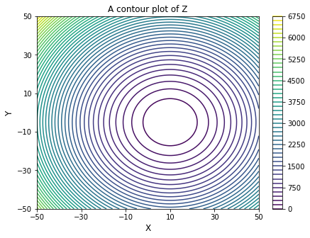
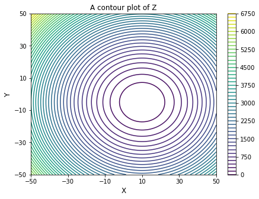

Test Notebook
Contents
Test Notebook#
This is a Jupyter Notebook that provides an introduction to Markdown and Code cells. If you’re able to run each cell in this notebook unsing either a local installation of Anaconda (Jupyter is installed with Anaconda) or using Google Colab, then you should have everything you need to actively participate in the workshop.
Although you have options, the most straightfoward way to create a cell is to use the + icon from the menu bar; you can then toggle the type of cell (Markdown, Code, RawNBconvert, Heading) using the drop down menu.
Once you have navigated to a specific cell (e.g., by clicking on it), you can run that cell either with the Run icon from the menu, selecting one of the run options from the Cell drop down, or (my personal favorite), pressing Ctrl+Enter, which will execute the cell without navigating you away from the cell.
A Markdown Cell#
If you’re new to Jupyter Notebooks but you have some experience in something like Matlab, the first thing that you’ll notice is that it does not look like a classic IDE (Integrated Development Environment) that you’d have with any sort of universal code editor like VS Code, or even with the GUI environment for Matlab. If you’re more old school, there will be no separate writing code in a text editor and then compiling and running code from the command line. In a Jupyter Notebook, everything is done in the Notebook environment, which breaks your “program” down into cells of varying types: Code, Markdown, or RawNBConvert. For teaching purposes, I use Code and Markdown cells exclusively, but you may at some point find the NBConvert helpful if you want to translate content into LaTeX or HTML.
If you’re not familiar with Markdown, it is a lightweight, easy to use markup language. Writing in Markdown will feel similar to a barebones word processor, with maybe a bit of HTML or LaTeX for special formatting–it also allows you to embed images. For me, having Markdown cells that support nicely formatted text is useful in that, once your Notebooks are fully developed, they are effectively a textbook-quality resource that can include figures and nicely formatted equations with embedded code demonstrations.
I find a purpose-built Notebook (written by the instructor to teach a specific topic) is far more accessible than a typical Chemical Engineering textbook, and students really appreciate having the resource to learn from asynchronously. We will discuss Markdown a bit during the workshop to showcase some of its capabilities and how it can be useful for teaching, but for now, it will suffice that you know that there is a Markdown environment in a Jupyter Notebook, and that it allows you to present anything that isn’t code in order to support and explain your code.
It is worth knowing LaTeX#
(If not all LaTeX, it is definitely at least worth knowing LaTeX math!)
We frequently need to write equations – why not format them nicely? Markdown in Jupyter will fully support LaTeX math using inline equations like \(f(x) = y^2\) or display format:
The above are, respectively, denoted using \\( \\\) and $\( \$\) syntax as in LaTeX. You can do a bit more, for example, using LaTeX align or array environments (below, the example uses an align block to line up all equations at the equals sign):
For the most part, Markdown in Jupyter has pretty robust support for LaTeX math mode; I use it extensively since it is much more readable than an equation written in text.
It is also worth knowing a little HTML#
Markdown in Jupyter also supports HTML, which you can use to enrich formatting – pretty much anything you write in standard HTML can be embedded directly in a Markdown cell, and it will render correctly when the cell is executed.
solve_ivp() in Python.
Introducing Code Cells..#
Commenting and Importing Packages#
# A Code Cell
# This Cell will run python code using IPython. It is compiled/run using a Python 3 kernel whenever you run the cell
# It also features syntax highlighting and light automatic formatting common to python
# Lines preceded by a pound sign/hashtag (#) are read as comments in Python, and they are not executed as code.
# Running this cell will import all of the packages necessary to execute the cells below without throwing errors.
# We will cover importing packages during the workshop; here it is just a test to make sure the installation is correct
import numpy as np
import matplotlib.pyplot as plt
from scipy.integrate import quadrature
from scipy.integrate import solve_ivp
import scipy.optimize as opt
from scipy.interpolate import interp1d
Numpy arrays, element-wise operations, and printing#
#This cell creates a numpy array and executes various element-wise operations on it (broadcasting)
A = np.array([1, 2, 3, 4, 5])
B = np.exp(A)
C = np.log(A)
D = np.log10(A)
E = A+B
F = A*B
print(A)
print(B)
print(C)
print(D)
print(E)
print(F)
[1 2 3 4 5]
[ 2.71828183 7.3890561 20.08553692 54.59815003 148.4131591 ]
[0. 0.69314718 1.09861229 1.38629436 1.60943791]
[0. 0.30103 0.47712125 0.60205999 0.69897 ]
[ 3.71828183 9.3890561 23.08553692 58.59815003 153.4131591 ]
[ 2.71828183 14.7781122 60.25661077 218.39260013 742.06579551]
2D arrays and matrix operations#
# This cell creates 2D numpy arrays and performs a matrix multiplication
M1 = np.array([[1, 2, 3], [4, 5, 6], [7, 8, 9]])
M2 = np.array([[10, 11, 12], [13, 14, 15], [16, 17, 18]])
M1@M2
array([[ 84, 90, 96],
[201, 216, 231],
[318, 342, 366]])
Functions (lambda and def keywords) and function evaluation#
# This cell creats a function h(x) = x^2 using lamba syntax and evaluates it at x = 25
h = lambda x: x**2
print(f'h(x) at x = 25 is h = {h(25):0.0f}')
h(x) at x = 25 is h = 625
# This cell creates a function g(x) that calculates and returns the values of a, b, and c
def g(x):
a = x**2
b = np.hstack([x, a])
c = np.sum(np.exp(x))
return (a, b, c)
# This cell evaluates the function g(x) for an array of 100 x values; it checks the type, size, and shape of the results
xset = np.linspace(0, 2, 100)
A, B, C = g(xset)
print(f'A is a {type(A)}, it\'s size is {A.size}, and it\'s shape is {A.shape}.')
print(f'B is a {type(B)}, it\'s size is {B.size}, and it\'s shape is {B.shape}.')
print(f'C is a {type(C)}, it\'s size is {C.size:3d}, and it\'s shape is {C.shape}.')
A is a <class 'numpy.ndarray'>, it's size is 100, and it's shape is (100,).
B is a <class 'numpy.ndarray'>, it's size is 200, and it's shape is (200,).
C is a <class 'numpy.float64'>, it's size is 1, and it's shape is ().
Plotting#
# This cell plots A vs. X with some very basic formatting commands
plt.figure(1, figsize = (5, 5))
plt.plot(xset, A, label = 'A', color = 'black', linestyle = 'dashed', linewidth = 1.25)
plt.xlabel('X values', fontsize = 12)
plt.ylabel('A values', fontsize = 12)
plt.xlim(0, max(xset))
plt.ylim(0, 5)
plt.xticks([0, 0.5, 1.0, 1.5, 2.0], fontsize = 11)
plt.yticks(fontsize = 11)
plt.minorticks_on()
plt.legend()
plt.show()
For Loops, List Comprehensions, and While Loops#
# This cell runs a simple for loop
days = ['Sunday', 'Monday', 'Tuesday', 'Wednesday', 'Thursday', 'Friday', 'Saturday']
for day in days:
print(day)
Sunday
Monday
Tuesday
Wednesday
Thursday
Friday
Saturday
# This cell uses a list comprehension to square each element in a list
A = [1, 2, 3, 4, 5]
B = [value**2 for value in A]
print(B)
[1, 4, 9, 16, 25]
# This cell runs a simple while loop
test = 0
while test <= 10:
print(test)
test += 1
0
1
2
3
4
5
6
7
8
9
10
Algebraic Equations Solvers#
#This cell solves a single nonlinear algebraic equation (x^3 - 2x^2 + exp(x) = 25) using opt.newton()
def eqn(x):
return x**3 - 2*x**2 + np.exp(x) - 25
ans1 = opt.newton(eqn, 2)
print(f'The solution is x = {ans1:0.2f}')
The solution is x = 2.88
# This cell solves a system of equations (x^2 + y^2 = 25 and x + exp(y) = 15) with opt.root()
def eqns(var):
x, y = var
eqn1 = x**2 + y**2 - 25
eqn2 = x + np.exp(y) - 15
return (eqn1, eqn2)
ans1 = opt.root(eqns, [1, 1])
if ans1.message == 'The solution converged.':
print('The cell has executed correctly!')
print(f'The solution is x = {ans1.x[0]:0.3f} and y = {ans1.x[1]:0.3f}')
The cell has executed correctly!
The solution is x = 4.408 and y = 2.360
Quadrature#
# This cell solves a definite integral (int(x^2 from 0 to 25)) using gaussian quadrature; i
integrand = lambda x: x**2
integral, error = quadrature(integrand, 0, 25)
print(integral)
5208.333333333334
Initial Value Problems#
# This cell solves an initial value problem comprised of coupled system of ODEs (dx/dt = -xy and dy/dt = -x^2 + y^2)
# at t = 0, x = 50 and y = 10
def odefun(t, var):
x, y = var
dxdt = -x + y
dydt = -x**2 + y**2
return (dxdt, dydt)
ans2 = solve_ivp(odefun, (0, 2), (50, 10), atol = 1e-8, rtol = 1e-8)
tsol = ans2.t
ysol = ans2.y[1]
if ans2.success == True:
print('The ODE solver executed correctly!!')
print('The graph below shows the behavior of X and Y as time increases')
plt.figure(1, figsize = (5, 5))
plt.plot(ans2.t, ans2.y[0], label = 'X', color = 'black')
plt.plot(ans2.t, ans2.y[1], label = 'Y', color = 'red', linestyle = 'dashed')
plt.xlim(0, 2)
plt.ylim(-50, 50)
plt.xlabel('time', fontsize = 12)
plt.xticks(np.arange(0, 2.01, 0.5), fontsize = 11)
plt.yticks(np.arange(-50, 50.1, 20), fontsize = 11)
plt.legend()
plt.show()
The ODE solver executed correctly!!
The graph below shows the behavior of X and Y as time increases
1D Interpolation#
# This cell creates an 1D interpolating polynomial (spline) that approximates the true solution y(t) from the ODE solution above
itp1 = interp1d(tsol, ysol, kind = 'cubic')
itp1(1.0)
array(-7.46573361)
Optimization/Minimization#
# This cell finds the minimum in a function y = (x - 10)^2 + 25 using opt.minimize
y = lambda x: (x - 10)**2 + 25
xset = np.linspace(0, 20)
plt.plot(xset, y(xset))
plt.title('y vs. x')
plt.xlim(0, 20)
plt.ylim(0, 150)
plt.show()
ans3 = opt.minimize_scalar(y)
if ans3.success == True:
print(f'The cell has executed correctly.')
print(f'The solver found a minimum at x = {ans3.x:0.2f}')
The cell has executed correctly.
The solver found a minimum at x = 10.00
## This cell finds the minimum in a multivariate function z(x,y) = (x - 10)^2 + (y + 5)^2 using opt.mimimize()
def z(var):
x, y = var
return (x-10)**2 + (y+5)**2
ans4 = opt.minimize(z, (0, 0))
if ans4.message == 'Optimization terminated successfully.':
print('The cell has executed correctly.')
print(f'The solver found a minimum at x = {ans4.x[0]:0.1f} and y = {ans4.x[1]:0.1f}.')
The cell has executed correctly.
The solver found a minimum at x = 10.0 and y = -5.0.
3D Plots (Surfaces, Contours, and Filled Contours)#
# This plot graphs the above function z in a 3d surface plot
z2 = lambda x,y: (x-10)**2 + (y+5)**2
x = np.linspace(-50, 50, 100)
y = np.linspace(-50, 50, 100)
X, Y = np.meshgrid(x, y) #we're making a surface plot, so we create a grid of (x,y) pairs
Z = z2(X,Y) #generate the Z data on the meshgrid (X,Y) by evaluating f at each XY pair.
#Create the figure and axis
fig, ax = plt.subplots(subplot_kw={"projection": "3d"})
#Plot the surface.
surf = ax.plot_surface(X, Y, Z, cmap = 'jet')
#Set properties
plt.xlim(-50, 50)
plt.xticks(np.arange(-50, 50.1, 20))
plt.ylim(-50, 50)
plt.yticks(np.arange(-50, 50.1, 20))
plt.xlabel('X')
plt.ylabel('Y')
plt.title('Z values vs. X and Y')
plt.show()
#Plot as contours
plt.figure(2, figsize = (7, 5))
plt.title('A contour plot of Z')
plt.contour(X, Y, Z, levels = 50)
plt.xlim(-50, 50)
plt.xticks(np.arange(-50, 50.1, 20))
plt.ylim(-50, 50)
plt.yticks(np.arange(-50, 50.1, 20))
plt.xlabel('X', fontsize = 12)
plt.ylabel('Y', fontsize = 12)
plt.colorbar()
plt.show()
#Plot as filled contours
plt.figure(2, figsize = (7, 5))
plt.title('A filled contour plot of Z')
plt.contourf(X, Y, Z, levels = 50, cmap = 'jet')
plt.xlim(-50, 50)
plt.xticks(np.arange(-50, 50.1, 20))
plt.ylim(-50, 50)
plt.yticks(np.arange(-50, 50.1, 20))
plt.xlabel('X', fontsize = 12)
plt.ylabel('Y', fontsize = 12)
plt.colorbar()
plt.show()
 
